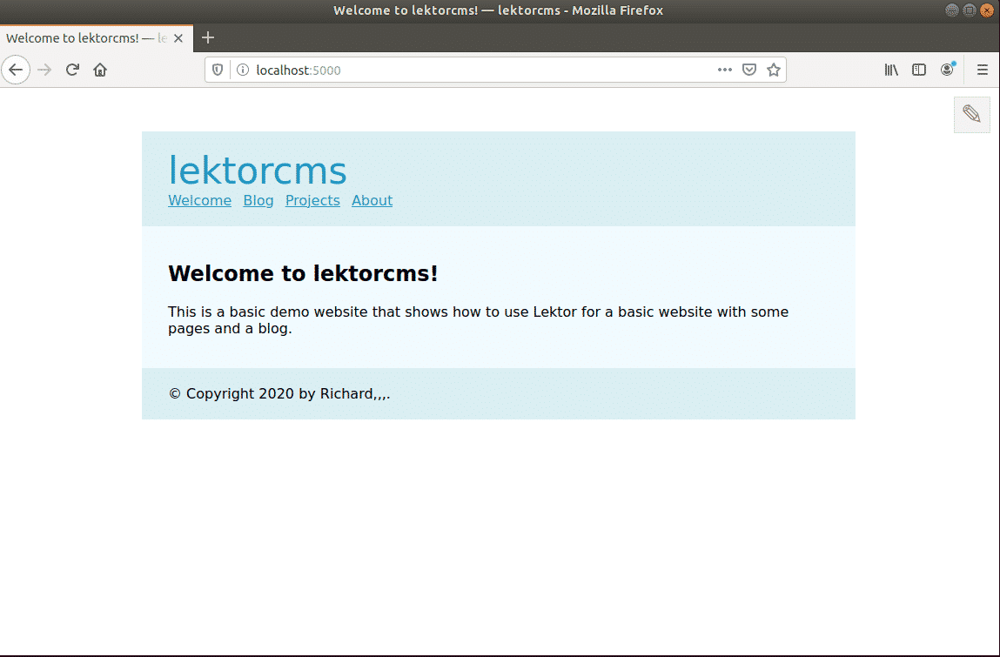
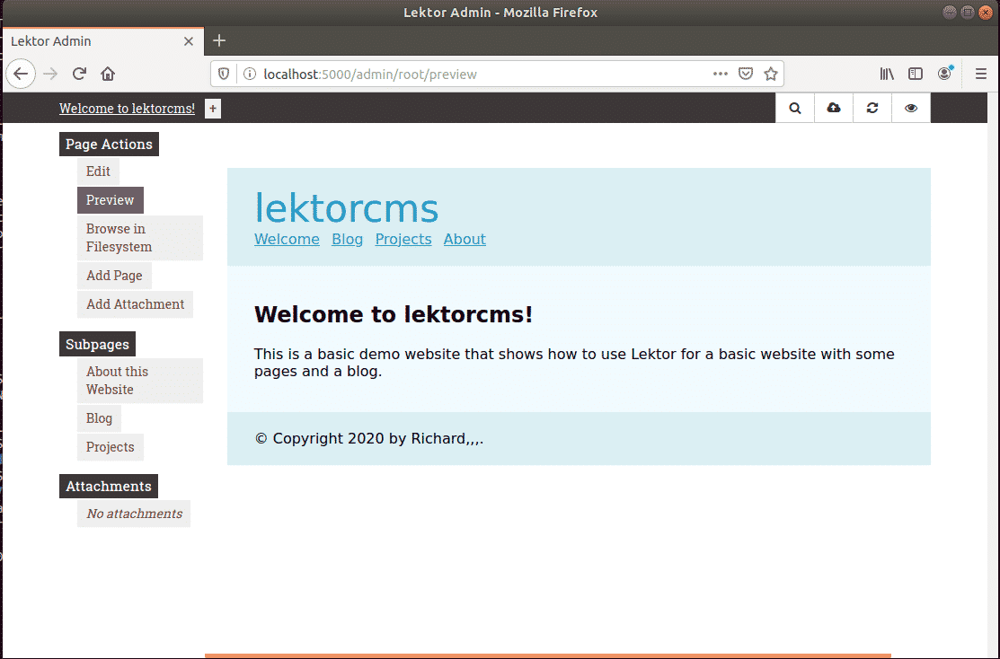

This brief tutorial shows students and new users how to install Lektor CMS on Ubuntu 18.04 | 16.04. Lektor is a cross-platform, flexible and powerful static content management system (CMS) built on top of the popular web-development framework for building complex and beautiful websites out of flat files.
All source data is stored in a flat-file tree database, built out 100% static HTML you can deploy them to any host, fully equipped with a flexible and beautiful admin interface, plugins system and many more.
If you’re a developer looking for an alternative flat-file CMS platform, it may be a good thing to use Lektor to make the process seamless with rapid development and clean pragmatic design.
For more about Lektor, please visit its homepage.
There are multiple ways to install Lektor on Ubuntu, however, the quickest way is go use Python and PIP to get it installed… Below, we’ll show you how to do that…When you’re ready to get Lektor on Ubuntu, follow the steps below:
By default, Ubuntu comes with some packages but not everything that allows you to install Lektor web framework…. For example, Python might not come standard with Ubuntu so you may have to install it… Run the commands below to install Python and Python-pip.
sudo apt update
sudo apt install python python-pip virtualenv
That should install what you need to get Lektor installed on Ubuntu… To verify what version of Python is installed, run the commands below
python -V
and for PIP, run the commands below
pip -V
Now that the basic requirements to get Lektor on Ubuntu are installed, run the commands below to download and install Lektor packages.
Lektor has its source code on Github that you can use to download and use. However, the quickest way is to use Python PIP…
Run the commands below to download and install Lektor using Python virtual environment (virtualenv)…
virtualenv venv
source venv/bin/activate
pip install Lektor
Running the commands above will get Lektor’s packages downloaded and installed.
Now that Lektor packages are installed, go and create your first app… You can create it in your home directory or anywhere on the system…. For this tutorial, we’re going to create the app in home directory.
Run the commands below to create a new Lektor project using its quick start command.
lektor quickstart
After that you’ll be prompted with few questions about the project.
Lektor Quickstart
=================
This wizard will generate a new basic project with some sensible defaults for
getting started quickly. We just need to go through a few questions so that
the project is set up correctly for you.
Step 1:
| A project needs a name. The name is primarily used for the admin UI and
| some other places to refer to your project to not get confused if multiple
| projects exist. You can change this at any later point.
> Project Name: lektorcms
Step 2:
| Your name. This is used in a few places in the default template to refer to
| in the default copyright messages.
> Author Name [m4dc0d3r,,,]: y
Step 3:
| This is the path where the project will be located. You can move a project
| around later if you do not like the path. If you provide a relative path it
| will be relative to the working directory.
> Project Path [/home/m4dc0d3r/Desktop/PROJECTS/blog-lektor/lektorcms]: y
Step 4:
| Do you want to generate a basic blog module? If you enable this the models
| for a very basic blog will be generated.
> Add Basic Blog [Y/n]: y
That's all. Create project? [Y/n] y
That should setup Lektor environment.
Change into the newly created project folder created above .
cd lektorcms
Then run the command below to start the server.
lektor server
That should start the server and display similar lines as shown below:
* Project path: /home/m4dc0d3r/Desktop/PROJECTS/blog-lektor/lektorcms/lektorcms.lektorproject
* Output path: /home/m4dc0d3r/.cache/lektor/builds/6d73eb27a549ae89234e4d1771bdb62c
* Running on http://127.0.0.1:5000/ (Press CTRL+C to quit)
Started source info update
Finished source info update in 0.57 sec
Started build
U index.html
U about/index.html
U projects/index.html
U blog/index.html
U static/style.css
U blog/first-post/index.html
Finished build in 0.23 sec
Started prune
Finished prune in 0.01 sec
Now, open your browser and go to the server hostname or IP address followed by port 5000
You should see Lektor welcome page similar to the one below

To go to the admin backend portal, type
That should prompt you for the superuser account and password… and allow you to logon to the backend…

That’s it!
Although that are many other settings you must configure to suit your environment, the steps above is the bare minimum to get Lektor installed…
NOTE : this isn't a post of mine you can find the original blog post here.